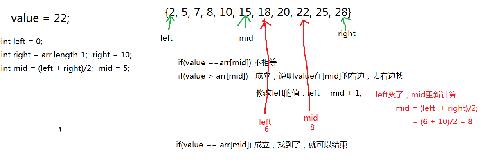
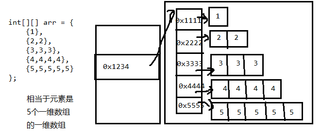
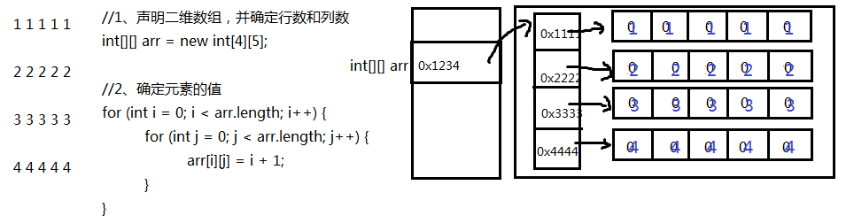
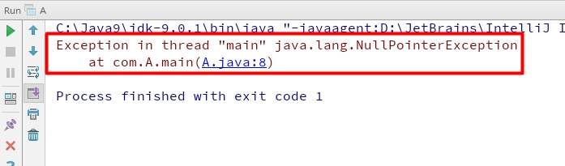

第4章【数组】
学习目标
-
理解数组的概念
-
掌握数组的声明和初始化
-
使用索引访问数组的元素
-
了解数组的内存图解
-
避免空指针和越界异常
-
掌握数组的遍历
-
掌握数组元素的统计
-
掌握数组最大值的获取
-
掌握数组元素的查找
-
掌握数组的冒泡排序
第四章 数组
4.1数组概述
数组的概念：
- 数组(array)，就是多个相同类型的数据按一定顺序排列的集合，并使用一个名字命名，然后用编号区分这些数据。
- 数组就是一个数据容器。
相关概念：
- 数组名
- 下标（或脚标、索引）(index)
- 元素(element)
- 数组的长度(length)
数组的特点：
- 数组的长度一旦确定就不能修改（重要）
- 存储的元素为相同的数据类型，可以是基本数据类型或引用数据类型
- 有索引，创建数组时会在内存中开辟一整块连续的空间。
- 存取元素的速度快，因为可以通过[下标]，直接定位到任意一个元素。
4.2 数组的声明与初始化
数组在使用之前需要先进行声明并初始化
4.2.1 数组的声明
数组的声明，即声明一个数组类型的变量。
//推荐元素的数据类型[] 数组的名称;int[] age;//不推荐元素的数据类型 数组名[];int age[];4.2.2 数组的初始化
数组使用之前需要先初始化，什么是数组初始化？就是给数组分配内存空间，并给元素赋值。
数组有两种初始化方式：
方式一：静态初始化
定义数组的同时为数组分配内存空间，并赋值。程序员只给定数组元素的初始值，不指定数组长度，由系统决定数组的长度
- 格式：
x数据类型[] 数组名 = new 数据类型[]{元素1,元素2,元素3...};或数据类型[] 数组名;数组名 = new 数据类型[]{元素1,元素2,元素3...};简化方式：数据类型[] 数组名 = {元素1,元素2,元素3...};//必须在一个语句中完成，不能分开两个语句写举例：
定义存储1，2，3，4，5整数的数组容器。
xxxxxxxxxxint[] arr = new int[]{1,2,3,4,5};//正确int[] arr;arr = new int[]{1,2,3,4,5};//正确int[] arr = new int[5]{1,2,3,4,5};//错误的，后面有{}指定元素列表，就不需要在[长度]指定长度。//简化方式：int[] arr = {1,2,3,4,5};//正确int[] arr;arr = {1,2,3,4,5};//错误
方式二：动态初始化
程序员只给定数组的长度，后期再给给元素赋值（实际系统会先给出元素的默认值）
- 格式：
xxxxxxxxxx数据类型[] 数组名字 = new 数据类型[长度];或数据类型[] 数组名字;数组名字 = new 数据类型[长度];格式详解：
数据类型： 指定创建的数组容器可以存储什么数据类型的数据。
[] : 表示数组。
数组名字：为定义的数组起个变量名，满足标识符规范，可以使用名字操作数组。
new：关键字，理解为开辟内存空间。因为数组本身是引用数据类型，所以要用new创建数组对象。
[长度]：数组的长度，表示数组容器中可以存储多少个元素。
- 注意：数组有定长特性，长度一旦指定，不可更改。
- 和水杯道理相同，买了一个2升的水杯，总容量就是2升，不能多也不能少。
举例：
定义可以存储5个整数的数组容器，代码如下：
xxxxxxxxxxint[] arr = new int[5];int[] arr;arr = new int[5];
4.3 数组元素的访问
索引： 每一个存储到数组的元素，都会自动的拥有一个编号，从0开始，这个自动编号称为数组索引(index)，可以通过数组的索引访问到数组中的元素。
索引范围：[0, 数组的长度-1]
格式：
xxxxxxxxxx数组名[索引]
访问数组元素：
数组名[索引]，表示指定索引位置的元素
数组名[索引]=值，表示为数组中指定索引位置的元素赋值
xxxxxxxxxxpublic static void main(String[] args) {//定义存储int类型数组，赋值元素1，2，3，4，5int[] arr = {1,2,3,4,5};//为0索引元素赋值为6arr[0] = 6;//获取数组0索引上的元素int i = arr[0];System.out.println(i);//直接输出数组0索引元素System.out.println(arr[0]);}
4.4 数组的遍历
数组遍历： 就是将数组中的每个元素分别获取出来，就是遍历。遍历也是数组操作中的基石。
数组的长度属性： 每个数组都具有长度，而且是固定的，Java中赋予了数组的一个属性，可以获取到数组的长度，语句为：
数组名.length，属性length的执行结果是数组的长度，int类型结果。由次可以推断出，数组的最大索引值为数组名.length-1。xxxxxxxxxxpublic static void main(String[] args) {int[] arr = {11, 22, 33, 44, 55};//打印输出数组的长度System.out.println("数组长度："+arr.length);//5//数组遍历（正序）：System.out.println("数组遍历：");for (int i = 0; i < arr.length; i++) {System.out.println(arr[i]);}//数组遍历（逆序）：System.out.println("数组逆序遍历：");for (int i = arr.length-1; i >=0 ; i--) {System.out.println(arr[i]);}}
4.5 数组元素的默认值
当我们使用动态初始化创建数组时：
数据类型[] 数组名字 = new 数据类型[长度];
此时只确定了数组的长度，那么数组的元素是什么值呢？
数组的元素有默认值：

4.6 数组内存图
4.6.1 内存概述
内存是计算机中重要的部件之一，它是与CPU进行沟通的桥梁。其作用是用于暂时存放CPU中的运算数据，以及与硬盘等外部存储器交换的数据。只要计算机在运行中，CPU就会把需要运算的数据调到内存中进行运算，当运算完成后CPU再将结果传送出来。我们编写的程序是存放在硬盘中的，在硬盘中的程序是不会运行的，必须放进内存中才能运行，运行完毕后会清空内存。
Java虚拟机要运行程序，必须要对内存进行空间的分配和管理。
4.6.2 Java虚拟机的内存划分
为了提高运算效率，就对空间进行了不同区域的划分，因为每一片区域都有特定的处理数据方式和内存管理方式。

| 区域名称 | 作用 |
|---|---|
| 程序计数器 | 程序计数器是CPU中的寄存器，它包含每一个线程下一条要执行的指令的地址 |
| 本地方法栈 | 当程序中调用了native的本地方法时，本地方法执行期间的内存区域 |
| 方法区 | 存储已被虚拟机加载的类信息、常量、静态变量、即时编译器编译后的代码等数据。 |
| 堆内存 | 存储对象（包括数组对象），new来创建的，都存储在堆内存。 |
| 虚拟机栈 | 用于存储正在执行的每个Java方法的局部变量表等。 局部变量表存放了编译期可知长度的各种基本数据类型、对象引用，方法执行完，自动释放。 |
4.6.3 数组内存图分析
（1）一个数组内存图
public static void main(String[] args) {
int[] arr = new int[3];
System.out.println(arr);//[I@5f150435
}

思考：打印arr为什么是[I@5f150435，它是数组的地址吗？
答：它不是数组的地址。
问？不是说arr中存储的是数组对象的首地址吗？
答：arr中存储的是数组的首地址，但是因为数组是引用数据类型，打印arr时，会自动调用arr数组对象的toString()方法，默认该方法实现的是对象类型名@该对象的hashCode()值的十六进制值。
问？对象的hashCode值是否就是对象内存地址？
答：不一定，因为这个和不同品牌的JVM产品的具体实现有关。例如：Oracle的OpenJDK中给出了5种实现，其中有一种是直接返回对象的内存地址，但是OpenJDK默认没有选择这种方式。
（2）两个数组内存图
public static void main(String[] args) {
int[] arr = new int[3];
int[] arr2 = new int[2];
System.out.println(arr);
System.out.println(arr2);
}

（3）两个变量指向一个数组
public static void main(String[] args) {
// 定义数组，存储3个元素
int[] arr = new int[3];
//数组索引进行赋值
arr[0] = 5;
arr[1] = 6;
arr[2] = 7;
//输出3个索引上的元素值
System.out.println(arr[0]);
System.out.println(arr[1]);
System.out.println(arr[2]);
//定义数组变量arr2，将arr的地址赋值给arr2
int[] arr2 = arr;
arr2[1] = 9;
System.out.println(arr[1]);
}

数组的练习题
练习1：用一个数组存储26个小写英文字母，并遍历显示，显示要求如：a->A
练习2：用一个数组存储本组学员的年龄，从键盘输入，并遍历显示
练习3：用一个数组存储本组学员的姓名，从键盘输入，并遍历显示
练习4：用数组存储一个星期的7个英文单词，然后从键盘输入星期的值[1-7]，输出对应的英文单词
练习5：用数组存储平年每一个月的总天数，从键盘输入年，月，日，输出这一天是这一年的第几天
提示：闰年（1）能被4整除不能被100整除（2）或能被400整除的年份
练习6：从1990年1月1日开始，三天打鱼两天晒网，问某年某月某日是打鱼还是晒网
画内存图
（1）
int[] arr1 = {1,2,3,4,5};（2）画出当i=3的内存图
int[] arr2 = new int[5]; for(int i=0; i<arr2.length; i++){ arr[i] = i+1; }
4.7 数组的基础算法
4.7.1 统计
求数组元素的总和、均值、统计偶数个数等
思路：遍历数组，挨个的累加，判断每一个元素
示例代码：
int[] arr = {4,5,6,1,9};
//求总和、均值
int sum = 0;//因为0加上任何数都不影响结果
for(int i=0; i<arr.length; i++){
sum += arr[i];
}
//均值
double avg = (double)sum/arr.length;
示例代码2：
int[] arr = {4,5,6,1,9};
//求总乘积
long result = 1;//因为1乘以任何数都不影响结果
for(int i=0; i<arr.length; i++){
result *= arr[i];
}
示例代码3：
int[] arr = {4,5,6,1,9};
//统计偶数个数
int even = 0;
for(int i=0; i<arr.length; i++){
if(arr[i]%2==0){
even++;
}
}
4.7.2 查找指定元素
查找某个指定元素在数组中的首次出现的位置（索引）
常见查找算法有顺序查找，二分查找（折半查找，前提要求数组中元素是按照大小顺序排序的）
顺序查找示例代码：
//查找value第一次在数组中出现的index
public static void main(String[] args){
int[] arr = {4,5,6,1,9};
int value = 1;
int index = -1;
for(int i=0; i<arr.length; i++){
if(arr[i] == value){
index = i;
break;
}
}
if(index==-1){
System.out.println(value + "不存在");
}else{
System.out.println(value + "的下标是" + index);
}
}
4.7.3 查找最值及其位置

查找出数组中元素的最大值或最小值
思路：
（1）先假设第一个元素为最大/最小，用max/min变量表示最大/小值，
（2）然后用max/min与后面的每个元素一一比较
示例代码：
int[] arr = {4,5,6,1,9}; //找最大值 int max = arr[0]; for(int i=1; i<arr.length; i++){ if(arr[i] > max){ max = arr[i]; } }查找最值及其第一次出现的下标
思路：
（1）先假设第一个元素最大/最小，用变量index表示其位置，
（2）然后用index位置的元素与后面的元素一一比较
（3）用变量index时刻记录目前比对的最大/小的下标
示例代码：
//求最大值及其位置 int[] arr = {4, 5, 6, 1, 9}; int maxIndex=0;//假定索引0位置的元素最大 for (int i = 1; i < arr.length; i++) { if(arr[i]>arr[maxIndex]){ maxIndex=i; } } System.out.println("最大值：" + arr[maxIndex]);查找找最值及其所有下标位置（最大值重复）
思路：
（1）先找到最大值
（2）遍历数组，看哪些元素和最大值是一样的
示例代码：
int[] arr = {4,9,5,6,1,9}; //找最大值 int max = arr[0]; for(int i=1; i<arr.length; i++){ if(arr[i] > max){ max = arr[i]; } } //遍历数组，看哪些元素和最大值是一样的 for(int i=0; i<arr.length; i++){ if(max == arr[i]){ System.out.print(i+"\t"); } }
4.7.5 排序之冒泡排序
排序：把数组中元素按照从小到大（升序）或者从大到小（降序）顺序进行重新排列
Java中的经典算法之冒泡排序（Bubble Sort）
原理：比较两个相邻的元素，将值大的元素交换至右端，最大值出现在最后位置。
思路：
依次比较相邻的两个数，将小数放到前面，大数放到后面。
即第一趟，首先比较第1个和第2个元素，将小数放到前面，大数放到后面。
然后比较第2个和第3个元素，将小数放到前面，大数放到后面。
如此继续，直到比较最后两个数，将小数放到前面，大数放到后面。
重复第一趟步骤，直至全部排序完成。
例如：冒泡：从小到大，从左到右两两比较
/*
{6,3,8,2,9,1}
第一轮：
第1次：arr[0]与arr[1]比较，6>3成立，就交换，{3,6,8,2,9,1}
第2次：arr[1]与arr[2]比较，6>8不成立，不交换{3,6,8,2,9,1}
第3次：arr[2]与arr[3]比较，8>2成立，就交换，{3,6,2,8,9,1}
第4次：arr[3]与arr[4]比较，8>9不成立，不交换{3,6,2,8,9,1}
第5次：arr[4]与arr[5]比较，9>1成立，就交换，{3,6,2,8,1,9}
第一轮结果：{3,6,2,8,1,9} 9已经到达正确位置，下一轮不用在参与
第二轮：
第1次：arr[0]与arr[1]比较，3>6不成立，不交换{3,6,2,8,1,9}
第2次：arr[1]与arr[2]比较，6>2成立，就交换，{3,2,6,8,1,9}
第3次：arr[2]与arr[3]比较，6>8不成立，不交换{3,2,6,8,1,9}
第4次：arr[3]与arr[4]比较，8>1成立，就交换，{3,2,6,1,8,9}
第二轮结果：{3,2,6,1,8,9} 8已经到达正确位置，下一轮不用在参与
第三轮：
第1次：arr[0]与arr[1]比较，3>2成立，就交换，{2,3,6,1,8,9}
第2次：arr[1]与arr[2]比较，3>6不成立，不交换{2,3,6,1,8,9}
第3次：arr[2]与arr[3]比较，6>1成立，就交换，{2,3,1,6,8,9}
第三轮结果：{2,3,1,6,8,9} 6已经到达正确位置，下一轮不用在参与
第四轮：
第1次：arr[0]与arr[1]比较，2>3不成立，不交换{2,3,1,6,8,9}
第2次：arr[1]与arr[2]比较，3>1成立，就交换，{2,1,3,6,8,9}
第四轮结果：{2,1,3,6,8,9} 3已经到达正确位置，下一轮不用在参与
第五轮
第1次：arr[0]与arr[1]比较，2>1成立，就交换，{1,2,3,6,8,9}
第五轮结果：{1,2,3,6,8,9} 2已经到达正确位置，下一轮不用在参与
剩下1，肯定是最小的了，不用比较了
6个元素，比较了5轮， n个元素需要n-1轮
每一轮比较很多次
*/
示例代码：
public static void main(String[] args){
int[] arr = {6,3,8,2,9,1}; //arr.length = 6
//i=1,2,3,4,5 一共5轮
for(int i=1; i<arr.length; i++){//轮数
/*
i=1，第1轮，j=0,1,2,3,4 arr[j]与arr[j+1]
i=2，第2轮，j=0,1,2,3 arr[j]与arr[j+1]
i=3，第3轮，j=0,1,2 arr[j]与arr[j+1]
i=4，第4轮，j=0,1 arr[j]与arr[j+1]
i=5，第5轮，j=0 arr[j]与arr[j+1]
j=0, j<=arr.length-1-i
*/
for(int j=0; j<=arr.length-1-i; j++){
if(arr[j] > arr[j+1]){
//交换位置
int temp = arr[j];
arr[j] = arr[j+1];
arr[j+1] = temp;
}
}
}
//结果
for(int i=0; i<arr.length; i++){
System.out.print(arr[i] + " ");
}
}
练习
1、随机产生10个[0,100)之间整数，统计3的倍数的个数
2、随机产生10个[0,150)之间整数，统计既是3又是5，但不是7的倍数的个数
3、随机产生10个[0,100)之间整数，统计素数的个数
4、已知本组学员有：String[] names = {"张三","李四","王五","赵六","钱七"};，从键盘输入一个学生姓名，查看他是否是本组学员
5、声明两个数组，一个存储本组学员姓名，一个存储本组学员成绩，找出最高分同学的姓名
4.8 数组的算法升华
4.8.1 数组的反转
方法有两种：
1、借助一个新数组
2、首尾对应位置交换
第一种方式示例代码：

int[] arr = {1,2,3,4,5,6,7,8,9};
//(1)先创建一个新数组
int[] newArr = new int[arr.length];
//(2)复制元素
int len = arr.length;
for(int i=0; i<newArr.length; i++){
newArr[i] = arr[len -1 - i];
}
//(3)舍弃旧的，让arr指向新数组
arr = newArr;//这里把新数组的首地址赋值给了arr
//(4)遍历显示
for(int i=0; i<arr.length; i++){
System.out.println(arr[i]);
}
缺点：需要借助一个数组，浪费额外空间，原数组需要垃圾回收
第二种方式示例代码：
实现思想：数组对称位置的元素互换。

int[] arr = {1,2,3,4,5,6,7,8,9};
//(1)计算要交换的次数： 次数 = arr.length/2
//(2)首尾对称位置交换
for(int i=0; i<arr.length/2; i++){//循环的次数就是交换的次数
int temp = arr[i];
arr[i] = arr[arr.length-1-i];
arr[arr.length-1-i] = temp;
}
//（3）遍历显示
for(int i=0; i<arr.length; i++){
System.out.println(arr[i]);
}
或

public static void main(String[] args){
int[] arr = {1,2,3,4,5,6,7,8,9};
//左右对称位置交换
for(int left=0,right=arr.length-1; left<right; left++,right--){
//首 与 尾交换
int temp = arr[left];
arr[left] = arr[right];
arr[right] = temp;
}
//（3）遍历显示
for(int i=0; i<arr.length; i++){
System.out.println(arr[i]);
}
}
4.8.2 数组的扩容
示例：当原来的数组长度不够了需要扩容，例如需要新增位置来存储10
int[] arr = {1,2,3,4,5,6,7,8,9};
//如果要把arr数组扩容，增加1个位置
//(1)先创建一个新数组，它的长度 = 旧数组的长度+1，或者也可以扩大为原来数组长度的1.5倍，2倍等
int[] newArr = new int[arr.length + 1];
//(2)复制元素
//注意：i<arr.length 因位arr比newArr短，避免下标越界
for(int i=0; i<arr.length; i++){
newArr[i] = arr[i];
}
//(3)把新元素添加到newArr的最后
newArr[newArr.length-1] = 10;
//(4)如果下面继续使用arr，可以让arr指向新数组
arr = newArr;
//(4)遍历显示
for(int i=0; i<arr.length; i++){
System.out.println(arr[i]);
}
（1）至于新数组的长度定义多少合适，看实际情况，如果新增的元素个数确定，那么可以增加指定长度，如果新增元素个数不确定，那么可以扩容为原来的1.5倍、2倍等
（2）数组扩容太多会造成浪费，太少会导致频繁扩容，效率低下
4.8.3 数组元素的插入
示例：在原数组的某个[index]插入一个元素
//在索引index位置插入一个整数5
int index=1;
int[] arr={1,2,3,4};
//创建新数组扩容
int[] newArr=new int[5];
//复制数组
for (int i = 0; i < arr.length; i++) {
newArr[i]=arr[i];
}
//向后移动插入位置之后的每个元素
for (int i = newArr.length - 1; i >= 0; i--) {
if(i>index){
newArr[i]=newArr[i-1];
}
}
//插入新元素
newArr[index]=5;
arr=newArr;
//遍历显示
for(int i=0; i<arr.length; i++){
System.out.println(arr[i]);
}
情形一：原数组未满（暂）
String[] arr = new String[5];
arr[0]="张三";
arr[1]="李四";
arr[2]="王五";
那么目前数组的长度是5，而数组的实际元素个数是3，如果此时需要在“张三”和“李四”之间插入一个“赵六”，即在[index=1]的位置插入“赵六”，需要怎么做呢？
String[] arr = new String[5];
arr[0]="张三";
arr[1]="李四";
arr[2]="王五";
//（1）移动2个元素，需要移动的起始元素下标是[1]，它需要移动到[2]，一共一共2个
System.arraycopy(arr,1,arr,2,2);
//（2）插入新元素
arr[1]="赵六";
//(3)遍历显示
for(int i=0; i<arr.length; i++){
System.out.println(arr[i]);
}
情形二：原数组已满（暂）
String[] arr = new String[3];
arr[0]="张三";
arr[1]="李四";
arr[2]="王五";
那么目前数组的长度是3，而数组的实际元素个数是3，如果此时需要在“张三”和“李四”之间插入一个“赵六”，即在[index=1]的位置插入“赵六”，需要怎么做呢？
String[] arr = new String[3];
arr[0]="张三";
arr[1]="李四";
arr[2]="王五";
//（1）先扩容
String[] newArr = new String[4];
for(int i=0; i<arr.length; i++){
newArr[i] = arr[i];
}
arr=newArr;
//（2）移动2个元素，需要移动的起始元素下标是[1]，它需要移动到[2]，一共2个
System.arraycopy(arr,1,arr,2,2);
//（3）插入新元素
arr[1]="赵六";
//(4)遍历显示
for(int i=0; i<arr.length; i++){
System.out.println(arr[i]);
}
4.8.4 数组元素的删除
//删除索引1位置的元素
int[] arr={1,2,3,4,5};
//把删除位置之后的每个元素向前移动
for (int i = 0; i < arr.length-1; i++) {
if(i>=1){
arr[i]=arr[i+1];
}
}
//根据实际业务需求，把最后位置的元素修改为某个值
arr[arr.length-1]=0;
//遍历显示
for(int i=0; i<arr.length; i++){
System.out.println(arr[i]);
}
示例：
String[] arr = new String[3];
arr[0]="张三";
arr[1]="李四";
arr[2]="王五";
现在需要删除“李四”，我们又不希望数组中间空着元素，该如何处理呢？
String[] arr = new String[3];
arr[0]="张三";
arr[1]="李四";
arr[2]="王五";
//（1）移动元素，需要移动元素的起始下标[2]，该元素需要移动到[1]，一共需要移动1个元素
System.arraycopy(arr,2,arr,1,1);
//（2）因为数组元素整体往左移动，这里本质上是复制，原来最后一个元素需要置空
arr[2]=null;//使得垃圾回收尽快回收对应对象的内存
4.8.5 数组的二分查找
二分查找：折半查找，前提条件是有序的数组
要求：要求数组元素必须支持比较大小，并且数组中的元素已经按大小排好序
示例：
class Exam2{
public static void main(String[] args){
int[] arr = {2,5,7,8,10,15,18,20,22,25,28};//数组是有序的
int value = 18;
int index = -1;
int left = 0;
int right = arr.length - 1;
int mid = (left + right)/2;
while(left<=right){
//找到结束
if(value == arr[mid]){
index = mid;
break;
}//没找到
else if(value > arr[mid]){//往右继续查找
//移动左边界，使得mid往右移动
left = mid + 1;
}else if(value < arr[mid]){//往左边继续查找
right = mid - 1;
}
mid = (left + right)/2;
}
if(index==-1){
System.out.println(value + "不存在");
}else{
System.out.println(value + "的下标是" + index);
}
}
}


4.8.6 数组的直接选择排序
示例代码：简单的直接选择排序
int[] arr = {49,38,65,97,76,13,27,49};
//比较轮数N-1
for (int j = 0; j <arr.length-1 ; j++) {
int min=j;//假如当前位置是最小的元素
//每轮比较次数N-j
for (int i = j; i <arr.length-1; i++) {
if(arr[min]>arr[i+1]){
//记录找到的最小元素下标
min=i+1;
}
}
if(min!=j) {
int temp = arr[j];
arr[j] = arr[min];
arr[min] = temp;
}
}
//显示结果
for(int i=0; i<arr.length; i++){
System.out.print(arr[i]);
}
}
int[] arr = {49,38,65,97,76,13,27,49};
for(int i=1; i<arr.length; i++){//外循环的次数 = 轮数 = 数组的长度-1
//（1）找出本轮未排序元素中的最值
/*
未排序元素：
第1轮：i=1,未排序，[0,7]，本轮未排序元素第一个元素是[0]
第2轮：i=2,未排序，[1,7]，本轮未排序元素第一个元素是[1]
...
第7轮：i=7,未排序，[6,7]，本轮未排序元素第一个元素是[6]
每一轮未排序元素的起始下标：0,1,2,3,4,5,6，正好是i-1的
未排序的后面的元素依次：
第1轮：[1,7] j=1,2,3,4,5,6,7
第2轮：[2,4] j=2,3,4,5,6,7
。。。。
第7轮：[7] j=7
j的起点是i，终点都是7
*/
int max = arr[i-1];
int index = i-1;
for(int j=i; j<arr.length; j++){
if(arr[j] > max){
max = arr[j];
index = j;
}
}
//（2）如果这个最值没有在它应该在的位置，就与这个位置的元素交换
/*
第1轮，最大值应该在[0]
第2轮，最大值应该在[1]
....
第7轮，最大值应该在[6]
正好是i-1的值
*/
if(index != i-1){
//交换arr[i-1]与arr[index]
int temp = arr[i-1];
arr[i-1] = arr[index];
arr[index] = temp;
}
}
//显示结果
for(int i=0; i<arr.length; i++){
System.out.print(arr[i]);
}

4.9 数组工具类
Java提供了现成的工具类，方便实现数组的相关操作。
java.util.Arrays数组工具类，提供了很多静态方法来对数组进行操作，而且如下每一个方法都有各种重载形式，以下只列出int[]类型的，其他类型的数组类推：
- static int binarySearch(int[] a, int key) ：要求数组有序，在数组中查找key是否存在，如果存在返回第一次找到的下标，不存在返回负数
- static int[] copyOf(int[] original, int newLength) ：根据original原数组复制一个长度为newLength的新数组，并返回新数组
- static int[] copyOfRange(int[] original, int from, int to) ：复制original原数组的[from,to)构成新数组，并返回新数组
- static boolean equals(int[] a, int[] a2) ：比较两个数组的长度、元素是否完全相同
- static void fill(int[] a, int val) ：用val填充整个a数组
- static void fill(int[] a, int fromIndex, int toIndex, int val)：将a数组[fromIndex,toIndex)部分填充为val
- static void sort(int[] a) ：将a数组按照从小到大进行排序
- static void sort(int[] a, int fromIndex, int toIndex) ：将a数组的[fromIndex, toIndex)部分按照升序排列
- static String toString(int[] a) ：把a数组的元素，拼接为一个字符串，形式为：[元素1，元素2，元素3。。。]
示例代码：
import java.util.Arrays;
import java.util.Random;
public class Test{
public static void main(String[] args){
int[] arr = new int[5];
// 打印数组,输出地址值
System.out.println(arr); // [I@2ac1fdc4
// 数组内容转为字符串
System.out.println("arr数组初始状态："+ Arrays.toString(arr));
Arrays.fill(arr, 3);
System.out.println("arr数组现在状态："+ Arrays.toString(arr));
Random rand = new Random();
for (int i = 0; i < arr.length; i++) {
arr[i] = rand.nextInt(100);//赋值为100以内的随机整数
}
System.out.println("arr数组现在状态："+ Arrays.toString(arr));
int[] arr2 = Arrays.copyOf(arr, 10);
System.out.println("新数组：" + Arrays.toString(arr2));
System.out.println("两个数组的比较结果：" + Arrays.equals(arr, arr2));
Arrays.sort(arr);
System.out.println("arr数组现在状态："+ Arrays.toString(arr));
}
}
4.11 附加（有能力同学）
1、折半插入排序
例如：数组{12,2,6,1,5}
第一次：在[0,1)之间找插入2的位置==>left = [0] ==> {2,12,6,1,5}
第二次：在[0,2)之间找插入6的位置==>left = [1] ==> {2,6,12,1,5}
第三次：在[0,3)之间找插入1的位置==>left = [0] ==>{1,2,6,12,5}
第四次：在[0,4)之间找插入5的位置==>left = [2] ==>{1,2,5,6,12}
@Test
public void test(){
int[] arr = {12,2,6,1,5};
sort(arr);
System.out.println(Arrays.toString(arr));
}
public void sort(int[] arr){
for (int i=1; i<arr.length; i++){
//找到[0,i)之间插入arr[i]的位置
//使用二分查找法
int left = 0;
int right=i-1;
while (left<=right){
int mid = (left + right)/2;
if(arr[i]<=arr[mid]){
right = mid - 1;
}else{
left = mid + 1;
}
}
//在[0,i)插入arr[i]
if(left < i){
int temp = arr[i];
System.arraycopy(arr,left,arr,left+1,i-left);
arr[left] = temp;
}
}
}

2、快速排序
例如：数组{5, 2, 6, 12, 1,7,9}
@Test
public void test(){
int[] arr = {5, 2, 6, 12, 1,7,9};
sort(arr,0, arr.length-1);
System.out.println(Arrays.toString(arr));
}
//将[start+1,end]之间的元素分为两拨，左边的所有元素比arr[start]小，右边的所有元素比arr[start]大
public void sort(int[] arr,int start, int end){
if(start < end){
int left = start+1;
int right = end;
while(left<right){
//从左往右，从[start+1]开始找比arr[start]大的数arr[left]，让它与arr[right]交换
//当arr[left]大于arr[start]就停止循环，因为此时找到了比arr[start]大的数arr[left]
while(arr[left]<=arr[start] && left<=end){
left++;
}
//从右往左，从[end]开始找比比arr[start]小的数arr[right]，让它与arr[left]交换
//当arr[right]小于arr[start]就停止循环，因为此时找到了比arr[start]小的数arr[right]
while(arr[right]>=arr[start] && right>start){
right--;
}
if(left < right){
int temp = arr[left];
arr[left] = arr[right];
arr[right] = temp;
}
}
//经过上面的while，//如果right>start+1，那么说明在[start+1,end]之间的数分为两拨
//[start+1,right]之间的是比arr[start]小的数
//[right,end]之间的是比arr[start]大的数
//交换arr[start]与arr[right]
if(right > start + 1){
int temp = arr[start];
arr[start] = arr[right];
arr[right] = temp;
}
//此时[start,right-1]之间都是比arr[start]小的数据了，但是它们还未排序
//此时[right+1,end]之间都是比arr[start]大的数据了，但是它们还未排序
//所以需要分别对[start,right-1]、[right+1,end]之间元素重复上面的操作继续排序
sort(arr,start,right-1);
sort(arr,right+1,end);
}
}
第1次调用sort(arr,0,6) 交换arr[left=2]与arr[right=4]：[5, 2, 1, 12, 6, 7, 9] 交换基准位置的元素与分界位置的元素：arr[start=0]与arr[right=2]：[1, 2, 5, 12, 6, 7, 9] 第2次调用sort(arr,0,1) 第3次调用sort(arr,0,0) 第4次调用sort(arr,2,1) 第5次调用sort(arr,3,6) 交换基准位置的元素与分界位置的元素：arr[start=3]与arr[right=6]：[1, 2, 5, 9, 6, 7, 12] 第6次调用sort(arr,3,5) 交换基准位置的元素与分界位置的元素：arr[start=3]与arr[right=5]：[1, 2, 5, 7, 6, 9, 12] 第7次调用sort(arr,3,4) 第8次调用sort(arr,3,3) 第9次调用sort(arr,5,4) 第10次调用sort(arr,6,5) 第11次调用sort(arr,7,6)

4.12 二维数组（理解）
- 二维数组：本质上就是元素为一维数组的一个数组。
- 二维数组的标记：[][]
int[][] arr; //arr是一个二维数组，可以看成元素是int[]一维数组类型的一个数组
二维数组也可以看成一个二维表，行*列组成的二维表，只不过这个二维表，每一行的列数还可能不同。但是每一个单元格中的元素的数据类型是一致的，例如：都是int，都是String等

4.12.1 二维数组的声明与初始化
（1）声明语法格式
//推荐
元素的数据类型[][] 二维数组的名称;
//不推荐
元素的数据类型 二维数组名[][];
//不推荐
元素的数据类型[] 二维数组名[];
//声明一个二维数组
int[][] arr;
（2）静态初始化
程序员给定元素初始值，由系统决定数组长度
//1.先声明，再静态初始化
元素的数据类型[][] 二维数组名;
二维数组名 = new 元素的数据类型[][]{
{元素1，元素2，元素3 。。。},
{第二行的值列表},
...
{第n行的值列表}
};
//2.声明并同时静态初始化
元素的数据类型[][] 二维数组名 = new 元素的数据类型[][]{
{元素1，元素2，元素3 。。。},
{第二行的值列表},
...
{第n行的值列表}
};
//3.声明并同时静态初始化的简化写法
元素的数据类型[][] 二维数组的名称 = {
{元素1，元素2，元素3 。。。},
{第二行的值列表},
...
{第n行的值列表}
};
如果是静态初始化，右边new 数据类型[][]中不能写数字，因为行数和列数，由{}的元素个数决定
示例：
//声明二维数组
int[][] arr;
//静态初始化
arr = new int[][]{{1,2,3},{4,5,6},{7,8,9}};
//arr = new int[3][3]{{1,2,3},{4,5,6},{7,8,9}};//错误，静态初始化，右边new 数据类型[]中不能指定长度
//声明并同时初始化
int[][] arr = new int[][]{{1,2,3},{4,5,6},{7,8,9}};
//声明并同时初始化的简化写法
int[][] arr = {{1,2,3},{4,5,6},{7,8,9}};//声明与初始化必须在一句完成
public class Array2Demo1 {
public static void main(String[] args) {
//定义数组
int[][] arr = {{1,2,3},{4,5},{6}};
System.out.println(arr);
System.out.println(arr[0]);
System.out.println(arr[1]);
System.out.println(arr[2]);
System.out.println(arr[0][0]); //1
System.out.println(arr[1][0]); //4
System.out.println(arr[2][0]); //6
System.out.println(arr[0][1]); //2
System.out.println(arr[1][1]); //5
//越界
System.out.println(arr[2][1]); //错误
}
}
（3）动态初始化（规则二维表）
程序员指定数组的长度，后期再赋值（系统会先给定元素默认初始值）
规则二维表：每一行的列数是相同的
//（1）确定行数和列数
元素的数据类型[][] 二维数组名 = new 元素的数据类型[m][n];
m:表示这个二维数组有多少个一维数组。或者说一共二维表有几行
n:表示每一个一维数组的元素有多少个。或者说每一行共有一个单元格
//此时创建完数组，行数、列数确定，而且元素也都有默认值
//（2）再为元素赋新值
二维数组名[行下标][列下标] = 值;
public static void main(String[] args) {
//定义一个二维数组
int[][] arr = new int[3][2];
//定义了一个二维数组arr
//这个二维数组有3个一维数组的元素
//每一个一维数组有2个元素
//输出二维数组名称
System.out.println(arr); //地址值 [[I@175078b
//输出二维数组的第一个元素一维数组的名称
System.out.println(arr[0]); //地址值 [I@42552c
System.out.println(arr[1]); //地址值 [I@e5bbd6
System.out.println(arr[2]); //地址值 [I@8ee016
//输出二维数组的元素
System.out.println(arr[0][0]); //0
System.out.println(arr[0][1]); //0
//...
}
（4）动态初始化（不规则二维表）
不规则二维表：每一行的列数可能不一样
//（1）先确定总行数
元素的数据类型[][] 二维数组名 = new 元素的数据类型[总行数][];
//此时只是确定了总行数，每一行里面现在是null
//（2）再确定每一行的列数，创建每一行的一维数组
二维数组名[行下标] = new 元素的数据类型[该行的总列数];
//此时已经new完的行的元素就有默认值了，没有new的行还是null
//(3)再为元素赋值
二维数组名[行下标][列下标] = 值;
public static void main(String[] args) {
//定义数组
int[][] arr = new int[3][];
System.out.println(arr); //[[I@175078b
System.out.println(arr[1][0]);//NullPointerException
System.out.println(arr[0]); //null
System.out.println(arr[1]); //null
System.out.println(arr[2]); //null
//动态的为每一个一维数组分配空间
arr[0] = new int[2];
arr[1] = new int[3];
arr[2] = new int[1];
System.out.println(arr[0]); //[I@42552c
System.out.println(arr[1]); //[I@e5bbd6
System.out.println(arr[2]); //[I@8ee016
System.out.println(arr[0][0]); //0
System.out.println(arr[0][1]); //0
//ArrayIndexOutOfBoundsException
//System.out.println(arr[0][2]); //错误
arr[1][0] = 100;
arr[1][2] = 200;
}
4.12.2 二维数组的遍历
for(int i=0; i<二维数组名.length; i++){
for(int j=0; j<二维数组名[i].length; j++){
System.out.print(二维数组名[i][j]);
}
System.out.println();
}
4.12.3 二维数组的内存图分析
1、示例一
int[][] arr = {
{1},
{2,2},
{3,3,3},
{4,4,4,4},
{5,5,5,5,5}
};

2、示例二
//1、声明二维数组，并确定行数和列数
int[][] arr = new int[4][5];
//2、确定元素的值
for (int i = 0; i < arr.length; i++) {
for (int j = 0; j < arr.length; j++) {
arr[i][j] = i + 1;
}
}

3、示例三
//1、声明一个二维数组，并且确定行数
//因为每一行的列数不同，这里无法直接确定列数
int[][] arr = new int[5][];
//2、确定每一行的列数
for(int i=0; i<arr.length; i++){
/*
arr[0] 的列数是1
arr[1] 的列数是2
arr[2] 的列数是3
arr[3] 的列数是4
arr[4] 的列数是5
*/
arr[i] = new int[i+1];
}
//3、确定元素的值
for(int i=0; i<arr.length; i++){
for(int j=0; j<arr[i].length; j++){
arr[i][j] = i+1;
}
}

4.12.4 数组操作的常见异常
1 、数组越界异常
观察一下代码，运行后会出现什么结果。
public static void main(String[] args) {
int[] arr = {1,2,3};
System.out.println(arr[3]);
}
创建数组，赋值3个元素，数组的索引就是0，1，2，没有3索引，因此我们不能访问数组中不存在的索引，程序运行后，将会抛出 ArrayIndexOutOfBoundsException
数组越界异常。在开发中，数组的越界异常是不能出现的，一旦出现了，就必须要修改我们编写的代码。
2、 数组空指针异常
观察一下代码，运行后会出现什么结果。
public static void main(String[] args) {
//定义数组
int[][] arr = new int[3][];
System.out.println(arr[0][0]);//NullPointerException
}
因为此时数组的每一行还未分配具体存储元素的空间，此时arr[0]是null，此时访问arr[0][0]会抛出NullPointerException 空指针异常。

空指针异常在内存图中的表现

二维数组练习
1、练习1
1、请使用二维数组存储如下数据，并遍历显示
1
2 2
3 3 3
4 4 4 4
5 5 5 5 5
public static void main(String[] args){
//1、声明一个二维数组，并且确定行数
//因为每一行的列数不同，这里无法直接确定列数
int[][] arr = new int[5][];
//2、确定每一行的列数
for(int i=0; i<arr.length; i++){
/*
arr[0] 的列数是1
arr[1] 的列数是2
arr[2] 的列数是3
arr[3] 的列数是4
arr[4] 的列数是5
*/
arr[i] = new int[i+1];
}
//3、确定元素的值
for(int i=0; i<arr.length; i++){
for(int j=0; j<arr[i].length; j++){
arr[i][j] = i+1;
}
}
//4、遍历显示
for(int i=0; i<arr.length; i++){
for(int j=0; j<arr[i].length; j++){
System.out.print(arr[i][j] + " ");
}
System.out.println();
}
}
public static void main(String[] args){
//1、声明一个二维数组，并且初始化
int[][] arr = {
{1},
{2,2},
{3,3,3},
{4,4,4,4},
{5,5,5,5,5}
};
//2、遍历显示
for(int i=0; i<arr.length; i++){
for(int j=0; j<arr[i].length; j++){
System.out.print(arr[i][j] + " ");
}
System.out.println();
}
}
2、练习2
请使用二维数组存储如下数据，并遍历显示
1 1 1 1 1
2 2 2 2 2
3 3 3 3 3
4 4 4 4 4
public static void main(String[] args){
int[][] arr = {
{1,1,1,1,1},
{2,2,2,2,2},
{3,3,3,3,3},
{4,4,4,4,4}
};
for(int i=0; i<arr.length; i++){
for(int j=0; j<arr[i].length; j++){
System.out.print(arr[i][j]+" ");
}
System.out.println();
}
}
public static void main(String[] args) {
//1、声明二维数组，并确定行数和列数
int[][] arr = new int[4][5];
//2、确定元素的值
for (int i = 0; i < arr.length; i++) {
for (int j = 0; j < arr[i].length; j++) {
arr[i][j] = i + 1;
}
}
//3、遍历显示
for(int i=0; i<arr.length; i++){
for(int j=0; j<arr[i].length; j++){
System.out.print(arr[i][j] + " ");
}
System.out.println();
}
}
3、练习3
3、请使用二维数组存储如下数据，并遍历显示
String[][] employees = {
{"10", "1", "段誉", "22", "3000"},
{"13", "2", "令狐冲", "32", "18000", "15000", "2000"},
{"11", "3", "任我行", "23", "7000"},
{"11", "4", "张三丰", "24", "7300"},
{"12", "5", "周芷若", "28", "10000", "5000"},
{"11", "6", "赵敏", "22", "6800"},
{"12", "7", "张无忌", "29", "10800","5200"},
{"13", "8", "韦小宝", "30", "19800", "15000", "2500"},
{"12", "9", "杨过", "26", "9800", "5500"},
{"11", "10", "小龙女", "21", "6600"},
{"11", "11", "郭靖", "25", "7100"},
{"12", "12", "黄蓉", "27", "9600", "4800"}
};
其中"10"代表普通职员，"11"代表程序员，"12"代表设计师，"13"代表架构师

public static void main(String[] args) {
String[][] employees = {
{"10", "1", "段誉", "22", "3000"},
{"13", "2", "令狐冲", "32", "18000", "15000", "2000"},
{"11", "3", "任我行", "23", "7000"},
{"11", "4", "张三丰", "24", "7300"},
{"12", "5", "周芷若", "28", "10000", "5000"},
{"11", "6", "赵敏", "22", "6800"},
{"12", "7", "张无忌", "29", "10800","5200"},
{"13", "8", "韦小宝", "30", "19800", "15000", "2500"},
{"12", "9", "杨过", "26", "9800", "5500"},
{"11", "10", "小龙女", "21", "6600"},
{"11", "11", "郭靖", "25", "7100"},
{"12", "12", "黄蓉", "27", "9600", "4800"}
};
System.out.println("员工类型\t编号\t姓名\t年龄\t薪资\t奖金\t股票\t");
for (int i = 0; i < employees.length; i++) {
switch(employees[i][0]){
case "10":
System.out.print("普通职员");
break;
case "11":
System.out.print("程序员");
break;
case "12":
System.out.print("设计师");
break;
case "13":
System.out.print("架构师");
break;
}
for (int j = 1; j < employees[i].length; j++) {
System.out.print("\t" + employees[i][j]);
}
System.out.println();
}
}
| 回目录 |
|---|
| 教程版本：1.2 更新日期：2019年1月3日 |